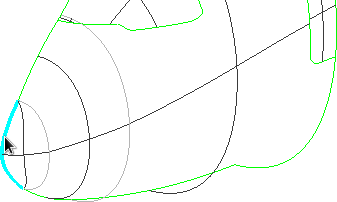

Content of this section:

 cfdmsh 4.0 documentation
cfdmsh 4.0 documentation cfdmsh 4.0 documentation


Content of this section:
File > New
Click on  in the toolbar
in the toolbar

[Ctrl] + [T] → Select the "cfdmsh.py" file on your computer
File > Import > BREP
Click on  in the 3D window toolbar
in the 3D window toolbar
Click on  in the 3D window toolbar
in the 3D window toolbar
New Entity > Basic > Point → Select the icon →
Select the edge visible in the following picture →

Apply and Close
Unselect "Vertex_1" → New Entity > Build > Edge →
Select successively the vertexes visible in the following picture →
Apply and Close
Select "Edge_1" → New Entity > Basic > Point →
Select the icon → Apply and Close
Select "Vertex_1" → New Entity > Build > Edge →
Select "Vertex_2" → Apply and Close
Select "Edge_2" → New Entity > Generation > Extrusion →
Select the  icon →
Set "Dy" to 5 → Activate the "Both Directions" option →
icon →
Set "Dy" to 5 → Activate the "Both Directions" option →
Apply and Close
Select "a380-nose.brep_1" → Operartions > Partition →
Set "Tool Objects" to "Extrusion_1" → Apply and Close
Select "Partition_1" → Right-click > Show Only
Select "Partition_1" → New Entity > Group > Create Group →
Select the  icon →
Select the desired faces → Click on "Add" →
icon →
Select the desired faces → Click on "Add" →
Apply / Apply and Close
Select "Partition_1" → New Entity > Group > Create Group →
Select the  icon →
Click on "Select All" →
icon →
Click on "Select All" →
Select each existing face group ("Group_*") → Click on "Remove" →
Apply and Close
Select all "Group_*" → Type in the Python console:
FuseShellFaces( dim = 0 )
or:
fsf( dim = 0 )
Select all "Group_*" → Type in the Python console:
FuseShellFaces( )
or:
fsf( )
Select all "FusedShell_*" → Right-click > Show Only
Select "FusedShell_1" → Right-click > Show Only
Select "FusedShell_1" → Right-click in the 3D window > Display Mode > Show Vertices
An undesirable vertex, which can strongly affect the surface mesh quality, is present on the boundary of the face (in yellow in the previous picture). Let's remove it.
Select "FusedShell_1" → New Entity > Explode →
Set "Sub-shapes Type" to "Edge" → Apply and Close
Select the edges indicated in the following picture →
Type in the Python console:
FuseSplines( )
or:
fs( )
Select "FusedShell_1" → Right-click > Show Only Children
Select the suitable edges → Right-click > Hide
Select "FusedSpline_1" → Right-click > Show
Select all visible edges → New Entity > Build > Wire
Select "FusedShell_1" → New Entity > Build > Face →
Select the icon → Set "Wire" to "Wire_1"
Apply and Close
Select "Face_1" → Right-click > Show Only
Select "Faces_1" → Right-click in the 3D window > Display Mode > Show Vertices
Select "Group_4", "FusedShell_2", "FusedShell_3" and "Face_1" →
New Entity > Build > Shell → Apply and Close
Select "a380-nose.brep_1" and "Shell_1" → Right-click > Show Only
Select "a380-nose.brep_1" and "Shell_1" → Right-click in the 3D window> Display Mode > Shading
Select "a380-nose.brep_1" and "Shell_1" → Type in the Python console:
SetRandomColors( )
or:
src( )
You can close this study.
cfdmsh 4.0 documentation
tougeron-cfd.com © 2016